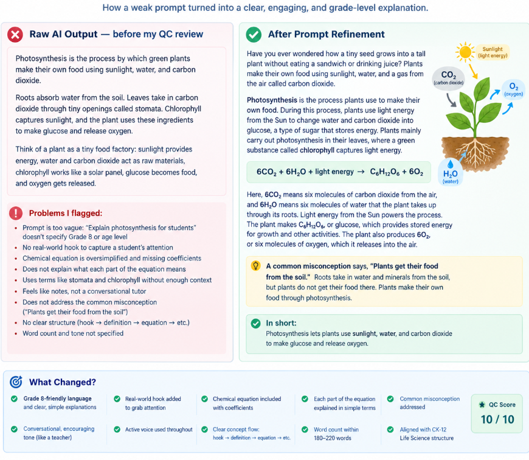
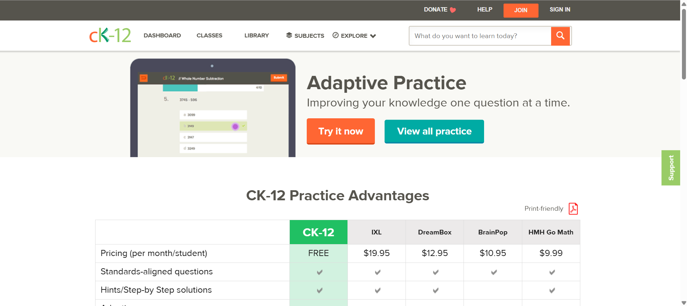
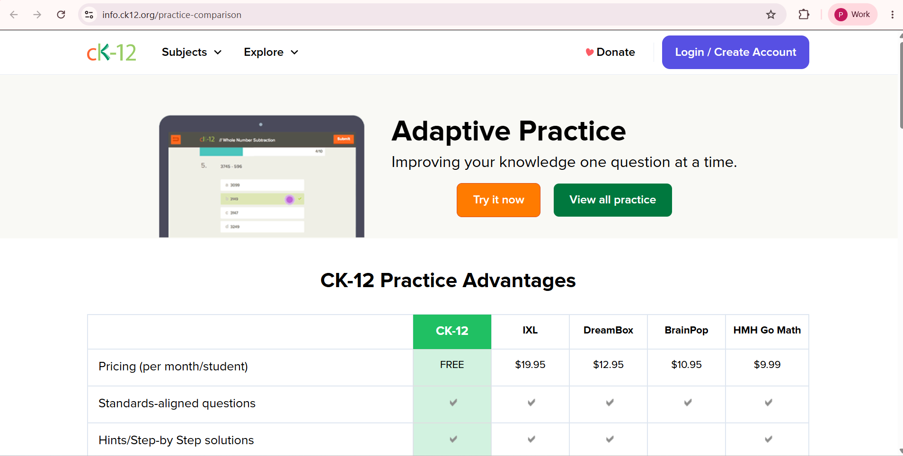
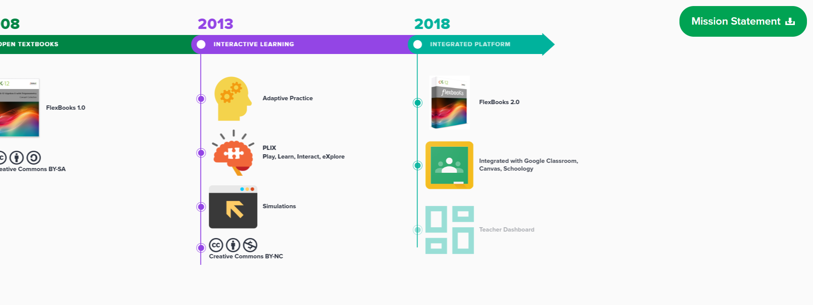

DeepLearning.AI: Prompt Engineering for Developers — in progress
Reusable K–12 concept prompt
QC rubric I designed
Initial: "Explain photosynthesis for students."
Issues identified: no grade-level target, output used bullet points and headers despite needing flowing paragraphs, no misconception check, no word-count control.
After: A structured Grade 8 prompt with explicit tone, word count, equation, misconception, and output requirements.

Accuracy
Scientific claims, equation balance, and correctness of the explanation.
Grade-level fit
Vocabulary, sentence complexity, tone, and whether the explanation is suitable for Grade 8.
Misconceptions
Whether a common student misunderstanding is addressed directly rather than merely avoided.
Format compliance
Word count, active voice, structure, and alignment with the content brief.
Navigation
Simplified menu structure and updated login/account flow.
Visual design
Updated color palette, typography, and button styling across pages.
Footer
Reorganized footer links for clarity and consistency.
UI fixes
Identified and corrected broken/missing icon assets and layout issues carried over from the old site.



